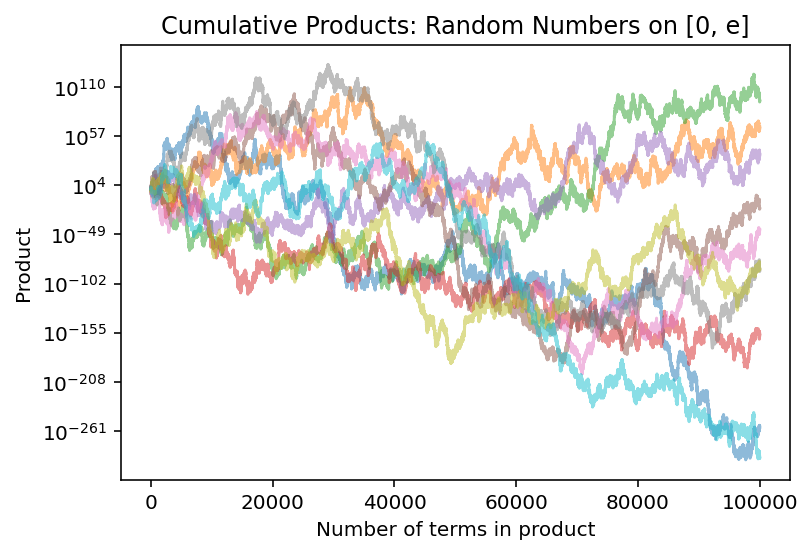

Code to generate this graph can be found above Figure 1
This is the solution for the problem originally posed here.
Question
When we compute a product of many numbers that are each uniformly distributed on \([0, C]\), the product becomes very small when \(C = 1\) and becomes very large when \(C = 10\). Where is the “cutoff” \(C\) where the product exhibits a transition?
Answer
It’s Euler’s number, \(e \approx 2.71828...\) – yes, that\(e\). It has a habit of doing this sort of thing.
This deserves an explanation, and we don’t have much choice here but to go heavy on the math here.
Proof
Let’s formulate this mathematically: we want to know how the product \[U_n = \prod_{k=1}^{n} X_k\] behaves, where \(\{X_i\}\) is a collection of independent, identically-distributed numbers that are all uniformly distributed on \([0, C]\). Products of random variables are somewhat obnoxious to work with; luckily, logarithms1 will let us trade products for sums. \[\log(U_n) = \log \left( \prod_{k=1}^{n} X_k \right) =
\sum_{k=1}^{n} \log \left( X_k \right)\]
One advantage of a sum is that it more closely resembles an average:
\[\frac{\log(U_n)}{n} = \frac 1 n \sum_{k=1}^n \log \left( X_k \right)\]
Now, the right-hand side is nothing more than an average of \(n\) independent copies of \(\log(X_i)\). The Law of Large Numbers says that as \(n\) increases, the right-hand side will converge to the expected value \(\mathbb E[\log(X_i)]\), so we just need to calculate that. By the Law of the Unconscious Statistician, this is \[\int_0^C \frac 1 C \cdot \log(x) \, \textrm d x = \frac 1 C \left[x \log(x) - x \right] \bigg|_0^C = \log(C) - 1.\]
Putting it all together, we can now investigate the behavior of the original product \(U_n\). As \(n\) increases, \(\frac{\log(U_n)}{n}\) converges to \(\log(C) - 1\).
When \(C > e\), \(\frac{\log(U_n)}{n}\) converges to a positive constant; hence, \(\log(U_n)\) diverges to \(\infty\), so \(U_n\) does so as well.
When \(C < e\), \(\frac{\log(U_n)}{n}\) converges to a negative constant; in this case, \(\log(U_n)\) diverges to \(-\infty\), implying that \(U_n\) converges to \(0\).
Hence, the “transition point” for \(C\) is indeed \(e\).
But wait, there’s more!
We left something out! What happens when \(C = e\)?
Let’s back up a bit: since \(\log(U_n) = \sum \log(X_k)\), and we have specifically chosen a value of \(C\) to force \(\mathbb E[\log(X_k)] = 0\), we can see that \(\log(U_n)\) is an unbiased random walk (i.e. a sum whose increments all have mean 0). Moreover, these increments are pretty well-behaved. For instance, they have finite second moments:2
\[ \mathbb E \left[ \left(\log(X_k) \right)^2 \right] = \int_0^e \frac 1 e \cdot \log(x)^2 \, \textrm d x = \frac 1 e \left[ x(\log^2(x) - 2 \log(x) + 2) \right] \bigg|_0^e = 1\]
Hence, the increments \(\log(X_k)\) have mean \(0\) and variance \(1\). This practically screams for the involvement of everybody’s favorite statistical workhorse: the Central Limit Theorem. The CLT shows us that tells us that if we had scaled \(\log(U_n)\) by \(\sqrt n\) instead of by \(n\), then \(\frac{\log(U_n)}{\sqrt n}\) would do something interesting – specifically, it would converge (in distribution) to the standard normal distribution. The Hewitt-Savage 0-1 Law implies that there are some values \(\phi_{\inf}, \phi_{\sup} \in [-\infty, \infty]\) such that \(\limsup_n \log(U_n) = \phi_{\inf}\) and \(\liminf_n \log(U_n) = \phi_{\sup}\) almost surely; hence, \(\phi_{\inf} = -\infty\) and \(\phi_{\sup} = \infty\) (since anything else would force \(\log(U_n) / \sqrt n\) to collapse to 0, which it doesn’t). This means that \(\log(U_n)\) is a random walk that will get arbitrarily high and arbitrarily low, infinitely often, almost surely.
Simulations versus Theory
Let’s summarize the end of that story in plain English: when \(C = e\), the product \(U_n\) will be a random walk in the positive real number line. As the number of digits increases, the product will wander very high up, and it will also wander very close to \(0\), and it will do both of those things many times. Here’s a visualization of ten copies of that process, placed on a log scale:
Show code
import mathimport numpy as npimport matplotlib.pyplot as pltfrom numpy.random import default_rngrng = default_rng(seed=6538)# length of sample path, i.e. number of uniformly-distributed numbers within# each product groupn =int(1e5)# generate ten sample paths of random walk, organized in columnsuniform_nums = rng.uniform(low=0, high=math.e, size=10*n).reshape([n, 10])# find the cumulative products within columns, starting from the top;# the kth element in a given column is the product of the k numbers that lie on # or above itsample_path = uniform_nums.cumprod(axis =0)fig, ax = plt.subplots()# plot each of the columns as separate pathsfor i inrange(10): ax.plot(np.linspace(1,n,n), sample_path[:, i], alpha=0.5)ax.set_yscale('log')ax.set_title('Cumulative Products: Random Numbers on [0, e]')ax.set_xlabel('Number of terms in product')ax.set_ylabel('Product')# to recreate the graph at the top of the page, uncomment the line below# and comment out the ax.set_title() line above# ax.set_axis_off()plt.show()

Figure 1: Ten parallel runs of uniform products
This problem is another great example of how valuable numerical simulations can be – but it’s also a stark reminder of their limitations.
Thanks to simulations, it’s not too hard to see that the funny business occurs somewhat near \(e\); however, convincing yourself that the cutoff point is exactly\(e\) (and not, say, 2.720 for some reason) can be tricky as a matter of pure numerical tinkering.
Even if you can convince yourself with simulations that the answer is \(e\), it’s quite hard to see what’s really going on at the critical value \(C=e\) through simulations alone. If we try to expand one of the products in the graph above to more digits, we run into a problem:
Show code
rng = default_rng(seed=6538)# length of sample path, i.e. number of uniformly-distributed numbers within# each product groupn =int(1e6)uniform_nums = rng.uniform(low=0, high=math.e, size=n)sample_path = uniform_nums.cumprod()fig, ax = plt.subplots()ax.plot(np.linspace(1,n,n), sample_path)# reduce number of ticks on x-axis to avoidax.xaxis.set_major_locator(plt.MaxNLocator(3))ax.set_yscale('log')ax.set_title('Cumulative Products: Random Numbers on [0, e]')ax.set_xlabel('Number of terms in product')ax.set_ylabel('Product')plt.show()
In this case, a little bit after 400K digits, the product got so close to 0 that Python could not longer distinguish it from 0 at all anymore. This ruins our ability to see what’s really happening here; the ideal version of this process cannot possibly be equal to zero, and if we were patient enough and unbound by numerical limitations, we’d see that graph lift back off and head upward again. In this case, restricting ourselves to a mere numerical lens means we miss out on something special.
Compared to simulations, mathematical theory is still indispensable when it comes to things like critical values, corner cases, generalizations, and connections between seemingly disparate things. These places are exactly where you can expect to find some of the most important truths as well as some of the most beautiful surprises.
And yet: numerical approaches and simulations do still hint at the wonderful things swimming just beneath the surface, even if they’re not quite enough to look at them directly. As always, using simulations as a sort of mathematical laboratory can be downright magical, but it’s the beginning of a story, not its end.
We’ll use \(\log(x)\) to denote the natural logarithm, i.e. the inverse of \(e^{x}\).↩︎
I swept the details under the rug, but the antiderivative of \(\log^2(x)\) is genuinely fun to find with integration by parts, if you’re into that sort of thing. Which, of course, I am.↩︎